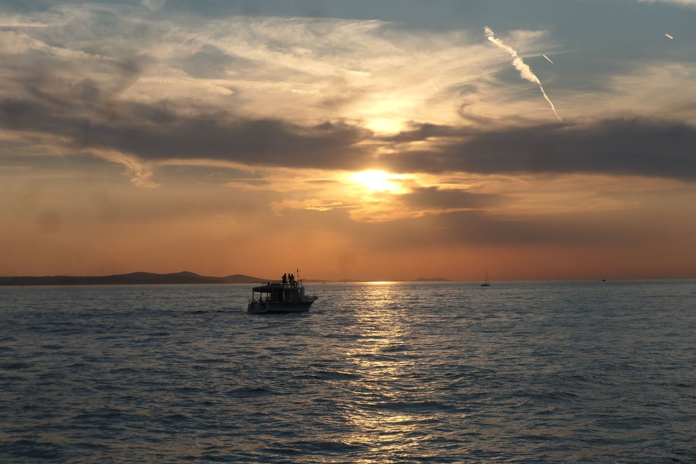
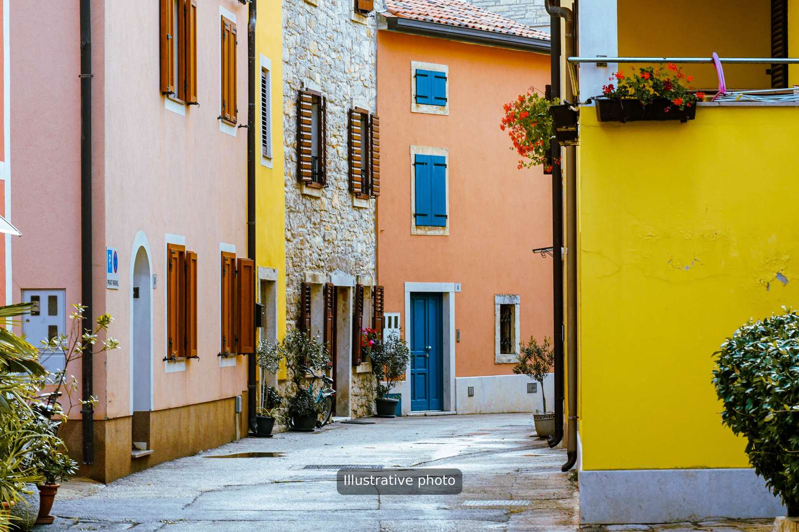

Über Try Istria: ein kleines Team an der Riva in Pula
Wir organisieren die Ausflüge, die wir selbst gern unternehmen würden: realistische Zeitangaben, einfache Preise und genug Raum, um das Meer zu genießen.

- Sitz
- Pula, Istrien
- Sprachen
- Englisch, Deutsch, Italienisch, Kroatisch
- Saison
- Mai bis Oktober
- Antwortzeit
- Innerhalb von 24 Stunden
Was wir tun
Try Istria bündelt das, was Urlauber rund um Pula meist unternehmen möchten: eine Rundfahrt um die Brijuni-Inseln mit Badestopp, einen Abend auf dem Wasser, einen Tag in Rovinj oder Venedig, einen ruhigen Vormittag im Kajak, einen Tauchgang, ein eigenes Boot und eine gemütliche Unterkunft.
Statt fünf verschiedener Websites und fünf E-Mails schreiben Sie an ein einziges Team. Wir sagen Ihnen, was in Ihrem Reisezeitraum möglich ist, und bringen alles in die richtige Reihenfolge.

Unsere Boote legen an der Riva ab, in der Nähe der ACI Marina.So läuft eine Buchung ab
- 1
Sie schreiben uns
Senden Sie Datum, Gruppengröße und Ihre Wünsche per WhatsApp, E-Mail oder über das Formular.
- 2
Wir prüfen
Wir bestätigen die Verfügbarkeit und beantworten Ihre Fragen innerhalb von 24 Stunden.
- 3
Sie erhalten die Details
Treffpunkt, Uhrzeit und was Sie mitbringen sollten, in einer übersichtlichen Nachricht.
- 4
Sie kommen zur Riva
Seien Sie 30 Minuten vor der Abfahrt da, den Rest übernehmen wir.
Ein Platz zum Übernachten
Gäste fragen uns oft, wo sie wohnen können. Deshalb bieten wir auch Ferienwohnungen in Pula und Fažana und einen ruhigen Bungalow nahe der Marina Veruda an. Beide sind ein praktischer Ausgangspunkt für Bootstage und für Ausflüge an der Küste mit dem Auto.

- Telefon: +385 91 55 77 230
- E-Mail: info@tryistria.com
- Riva, 52100 Pula
Bildnachweis
Alan Wang (Pexels), Artem Zhukov (Pexels), AXP Photography (Pexels), Bingqian Li (Pexels), Bingqian Li (Pexels), Bruno Tapia (Pexels), Caroline O.marcel (Pexels), Daniel R. (Unsplash), Daniel R. (Unsplash), Dio Patcho (Pexels), Dominik Puskas (Unsplash), Elianne Dipp (Pexels), Francesco Ungaro (Pexels), Francesco Ungaro (Pexels), Guillaume Meurice (Pexels), iSAW Company (Unsplash), Jesse van Vliet (Unsplash), Jonathan Caliguire (Unsplash), Jordan Cormack (Unsplash), João Guerreiro (Pexels), Keegan Checks (Pexels), L.W. (Unsplash), Max Vakhtbovych (Pexels), Oriana Polito (Pexels), Rachel Claire (Pexels), Sebastjan strasek (Unsplash), Valera Rychman (Pexels).
Bereit zu buchen?
Senden Sie uns Ihre Reisedaten und die Gruppengröße. Wir prüfen die Verfügbarkeit und antworten innerhalb von 24 Stunden.